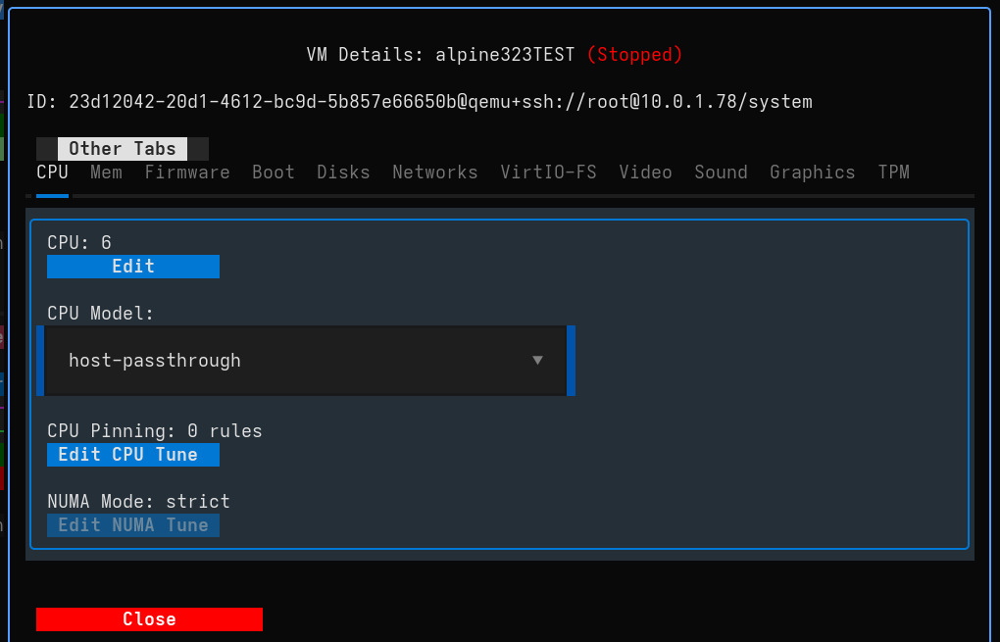
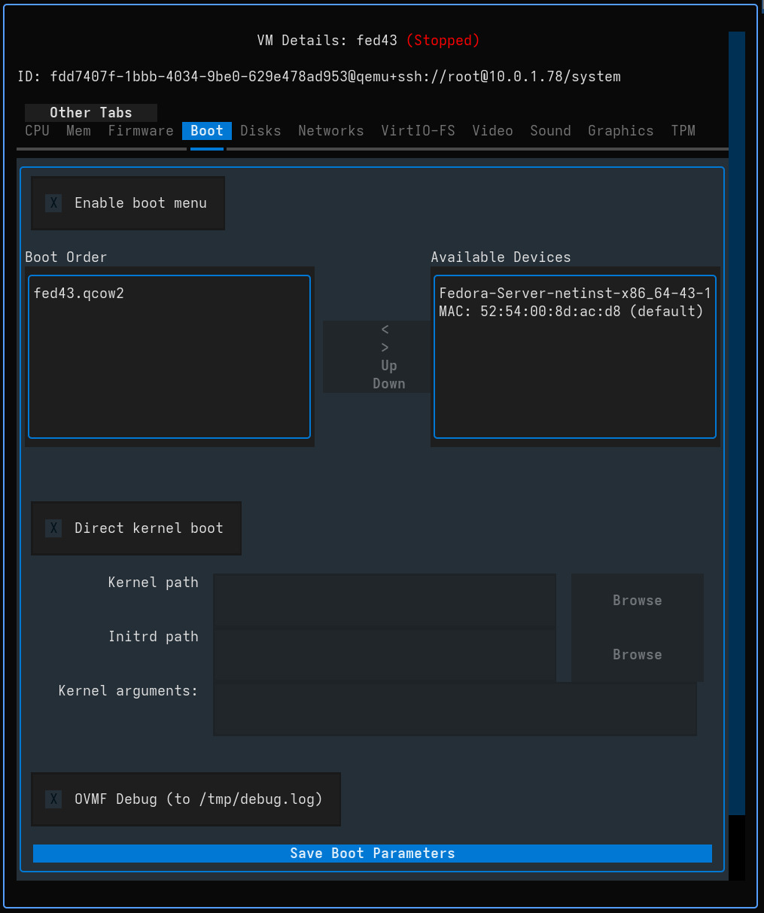
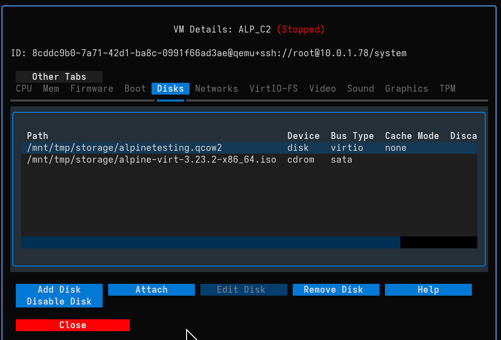
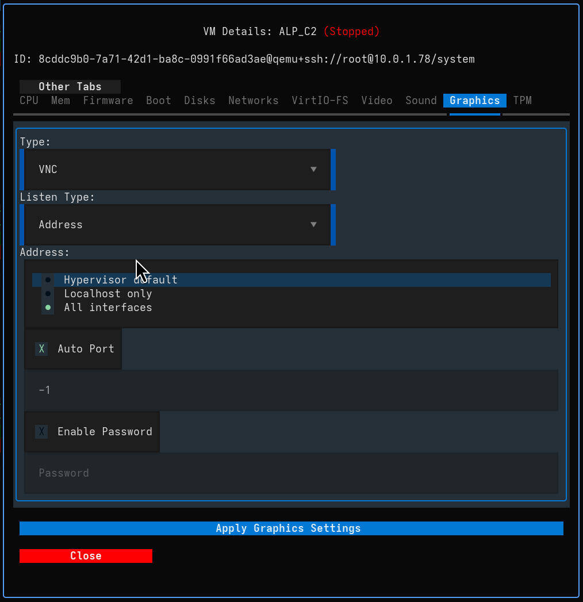

VM Configuration¶
The VM Configuration modal allows you to fine-tune every aspect of your virtual machines, from resource allocation to hardware passthrough.
To access configuration:
* Single VM: Double-click on a VM card (or press Enter when selected).
* Bulk Edit: Select multiple VMs and use the Bulk CMD menu (or press b).

General Resources¶
Adjust the core computing resources for your VM.
- CPU:
- Cores: Set the number of vCPUs.
- Model: Choose the CPU model.
host-passthroughprovides best performance, while specific models (e.g.,EPYC,Skylake) ensure migration compatibility.
- Memory:
- Size: Allocate RAM (in MB).
- Shared Memory: Enable this if you plan to use VirtIO-FS for file sharing.
- Firmware & Security:
- Firmware: Switch between BIOS and UEFI modes.
- Secure Boot: Enable for modern OS security requirements (requires UEFI).
- AMD SEV/SEV-ES: Enable memory encryption features (if supported by host hardware).
- Machine Type: Update the QEMU machine type version (e.g.,
pc-q35-6.0topc-q35-7.0) to access new hypervisor features.
Boot Management¶
Control how the VM starts up.

- Boot Order: Reorder devices using the Up and Down buttons to prioritize boot targets.
- Boot Menu: Enable the interactive boot menu (accessible via
F12during POST). - Devices: Add or remove Disks and Network Interfaces from the boot sequence using the arrow buttons.
Storage & Networking¶
Manage your virtual disks and network connections.

Disks¶
- Management: Add new virtual disks, attach existing images/volumes, or remove/disable current drives.
- Modes: Configure Cache (e.g.,
none,writeback) and Discard (e.g.,unmap) settings for performance optimization and storage efficiency.
Networks¶
- Interfaces: Add or remove network adapters.
- Model: Select the NIC model (e.g.,
virtiofor performance,e1000efor compatibility). - Connection: Switch networks (e.g., from
defaultNAT to a bridge) on the fly.
VirtIO-FS¶
Share directories from the host to the guest efficiently without network overhead. * Requirement: Requires Shared Memory to be enabled in the Memory tab. * Setup: Map a host source path to a guest mount tag.
Hardware & Peripherals¶
Configure advanced hardware integration and display settings.

Graphics & Display¶
- Video Model: Select the video adapter (e.g.,
virtiofor 3D acceleration,qxl,vga,none). - Graphics Type: Choose between VNC (broad compatibility) and SPICE (better desktop integration).
- Remote Access: Configure listen addresses, ports, and passwords for remote connections.
- 3D Acceleration: Enable for supported guests (requires
virtiovideo model).

Input & Peripherals¶
- USB Host: Pass physical USB devices from the host to the VM dynamically.
- TPM: Configure Emulated or Passthrough TPM 2.0 (essential for Windows 11 support).
- RNG: Configure Random Number Generator passthrough for better entropy in the guest.
- Watchdog: Set up automatic actions (reset, shutdown) if the guest OS hangs.
Serial & Channels¶
- Serial: Manage serial consoles (PTY) for headless management.
- Channels: Configure QEMU Guest Agent channels for host-guest communication (copy-paste, time sync).
Bulk Configuration
When multiple VMs are selected via Bulk Edit, changing a setting (like CPU Model or Graphics Password) will apply that change to all selected VMs sequentially. This is powerful for fleet updates.